រមណីយដ្ឋានកៀនស្វាយក្រៅ ស្ថិតនៅក្នុង ឃុំ ភូមិធំ ស្រុកកៀនស្វាយ ចម្ងាយផ្លូវសរុបពីភ្នំពេញ ១៩ គ.ម។ នៅទី នោះមាន វត្តមួយដែលមានឈ្មោះថា វត្តកៀនស្វាយក្រៅ។ ដើម្បីទៅដល់វត្តនោះអ្នកទេសចរត្រូវធ្វើដំណើរតាមដង ផ្លូវជាតិលេខ ១ ដោយឆ្លងកាត់ស្ពានព្រះមុនីវង្ស លុះទៅដល់គីឡូម៉ែត្រលេខ ១៩ មានផ្លូវលំនៅខាងឆ្វេងដៃ ដែល មានក្លោងទ្វារបញ្ជាក់ថា វត្តកៀនស្វាយក្រៅ ។ បន្តតាមផ្លូវលំនោះ ចំងាយប្រហែល ៣០០០ម៉ែត្រ ទៀតនឹង ទៅ ដល់ទីអារាមនោះ ។ ចេញដំណើរហួសពីវត្តប្រមាណជា ១០០ ម៉ែត្រ យើងឃើញកន្លែងកម្សាន្តមួយ ដែលត្រូវគេ ស្គាល់ថា "កៀនស្វាយ " នោះ ។
រមណីយដ្ឋាននេះដែលមានផ្ទៃដិ ១០ ហិចតា កើតឡើងនៅក្រោយសឲ្យឆ្នាំ ១៩៧៩ ដោយសារទីនេះមានសម្រស់ ធម្មជាតិដ៏អស្ចារ្យ លំអដោយម្លប់ឈើខ្ពស់ៗ តូចធំ ដ៏ត្រជាក់ត្រឈឹងត្រឈៃ និង មានដំណាំចំការ និង ដំណាំហូប ផ្លែគ្រប់មុខដ៏ស្រស់បំព្រងទៀត ។ ក្រៅពីនេះ នៅមានសម្រស់ខ្ទបដ៏វិសេសវិសាលមួយទៀត ដែលបែកចេញពីទន្លេមេគង្គកាត់ទឹកដីដ៏សំបូរជីវជាតិ និងចំការរុក្ខជាតិដ៏ស្តុកស្តម ។ ទន្លេនេះ ហាក់ដូចជាប្រគល់ខ្លួន ទាំងស្រុង ដល់អ្នកស្រុកនៅទីនេះ ក្នុងការប្រកបរបរដាំដុះ និង រស់នៅក្នុងក្តីសង្ឃឹម ។ ដើមរុក្ខជាតិហូបផ្លែតូចធំបានដុះទោរ ទន់ទៅរកផ្ទៃទឹកប្រប និង ឆ្នេរទន្លេខ្ទបហើយបែកមែកត្រសុំត្រសាយចោលម្លប់ដ៏ធំល្វឹងល្វើយ ជាទីមនោរម្យសំរាប់ ភ្ញៀវទេសចរដែលមកកម្សាន្ត ។ យើងឃើញទន្លេខ្ទបនេះ ជាចំណុចសំខាន់ក្នុងការទាក់ទាញភ្ញៀវទេសចរទាំងក្នុង និង ក្រៅប្រទេសឲ្យមកកម្សាន្ត ព្រោះទីនេះមានខ្យល់អាកាសបរិសុទ្ធ និងសម្រស់ធម្មជាតីដ៏ស្រស់បំព្រង ។
ទន្ទឹមនឹងនោះទន្លេជាមធ្យោបាយចម្លងពីទីនេះទៅកាន់ភូមិក្អម ដែលមានតំបន់ផ្សេងៗជុំវិញទីនោះ ។ ម្យ៉ាងទៀតរមណីយដ្ឋាននេះមានការទាក់ទាញភ្ញៀវផងដែរ ដោយសារមានផ្ទះបណ្តែតទឹក អាហារដ្ឋាន និងល្បែងកម្សាន្ត ផ្សេងៗពីព្រោះនៅទីនោះមានឳជារសដ៏ឈ្ងុយឆ្ងាញ់នៃម្ហូបអាហារដូចជាមាន់ដុត ត្រីអាំង និងដំណាំហូបផ្លែជូចជា ខ្នុរ ល្មុត ស្វាយ ចេក ដូង… ។ល ។ ដោយអំនោយផលពីធម្មជាតិ ធ្វើឲតំបន់ទេសចរណ៍កៀនស្វាយនេះមាន ឥទ្ធិពលទាក់ទាញភ្ញៀវដូចជាផ្ទះទឹកមានច្រើនតាមមាត់ទន្លេ ។
ដូច្នេះមន្ទីរទេសចរខេត្តក៍ដូចជា អាជ្ញាធរដែនដី និង គណៈកម្មាធិការភូមិរៀបចំអភិវឌ្ឍន៍ និងកែប្រែតំបន់ឲ្យបាន កាន់តែប្រសើរដូចជា រៀបចំសណ្តាប់ធ្នាប់ការដាក់កង់ ម៉ូតូ ឡានឲបានសមរម្យជៀសវាង ភាពរញ៉េរញ៉ៃបាត់សោ ភ័ណ្ឌភាព ។ រៀបចំអនាម័យដាក់ធុងសំរាមជៀសវាងការចោរសំរាមរហេតរហូតរបស់ភ្ញៀវ ។ រៀបចំសណ្តាប់ធ្នាប់ លក់ដូររបស់ប្រជាជនឲបានល្អ បង្កើតគោលនយោបាយល្អប្រសើរ និងរក្សាសន្តិសុខជូនភ្ញៀវទេសចរ ៕
ផ្សារកៀនស្វាយគឺជាផ្សារដែលសម្បូរទៅដោយម្ហូបអាហារដែលមានរស់ជាតិបែបធម្មជាតិ និង មានប្រភេទផ្សេងៗគ្នា។ បើនិយាយពីតំលៃវិញក៏មិនថ្លៃប៉ុន្មានដែរ វាអាស្រ័យទៅតាមមុនហ្ហូបដែលអ្នកម្មង់។ អាហារប្រភេទអ្វីដែលអ្នកអាចរកបាននៅគៀនស្វាយក្រវ៉ាសូមពិនិត្យបញ្ជីខាងក្រោម៖
១ សាច់មាន់ចៀន
មួយក្នុងចំនោមអាហារប្រមូលផ្តុំដែលពេញនិយមគឺសាច់ចៀន / បុកត្រូវបានគេឃើញស្ទើរតែគ្រប់ហាង។ វាឆ្ងាញ់ហើយល្អគ្រប់ឱកាសជាពិសេសការចិញ្ចឹមបីបាច់ថែរក្សាគ្រួសារដូចជាអាហារនៅឯកៀន។

២ ត្រីដុត / ចៀន
នៅក្បែរទន្លេត្រីអាចជាជំរើសអាហារដ៏ល្អបំផុតនៅទីនេះ។ ចាប់និងចម្អិនស្រស់ៗមានត្រីជាច្រើនប្រភេទដែលអ្នកអាចរីករាយនៅទីនេះ។
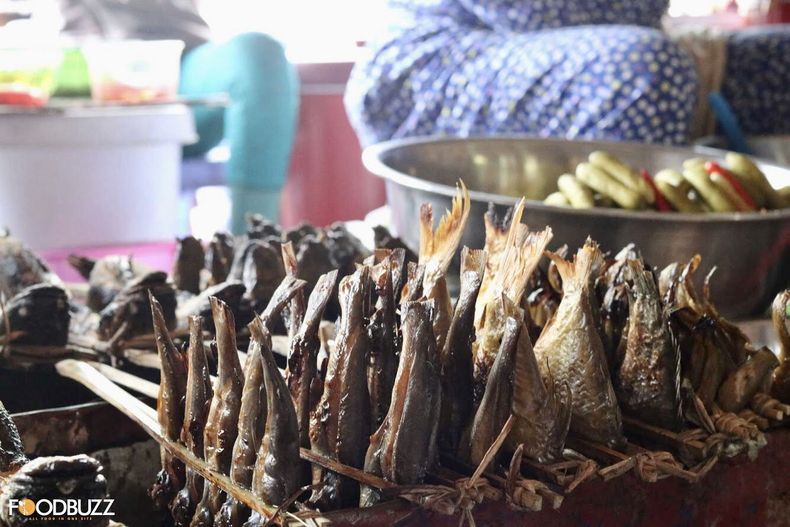៣ អន្សមអាំង
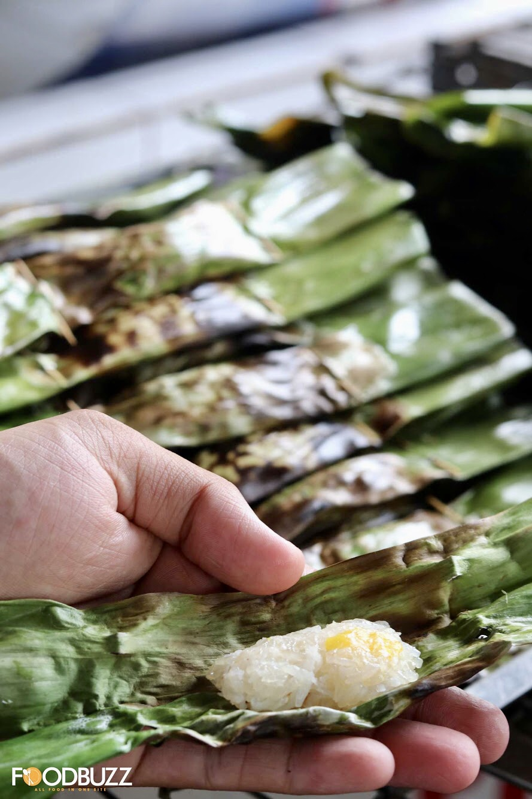៤ បង្អែម តាប៉ែ
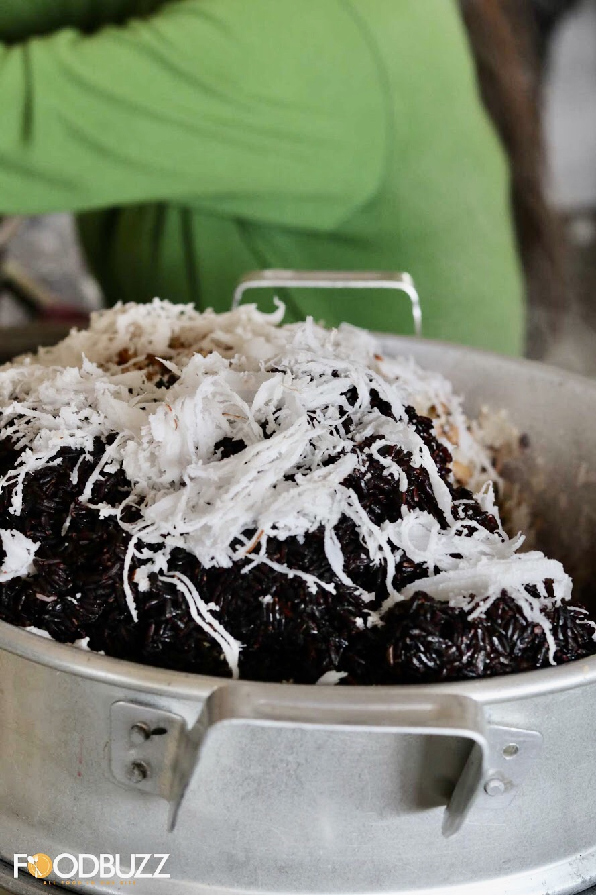៥ ពងក្រួច
ពងក្រួចគឺជាអាហារធម្មតានៅគ្រប់ទីកន្លែងសូម្បីតែនៅក្នុងប្រទេសកម្ពុជា។ ជ្រលក់ពងទាស្ងោរឬពងក្រួចដាក់ក្នុងអំបិលម្រេចខ្មៅដើម្បីទទួលបានរសជាតិឆ្ងាញ់បំផុតពីពង។
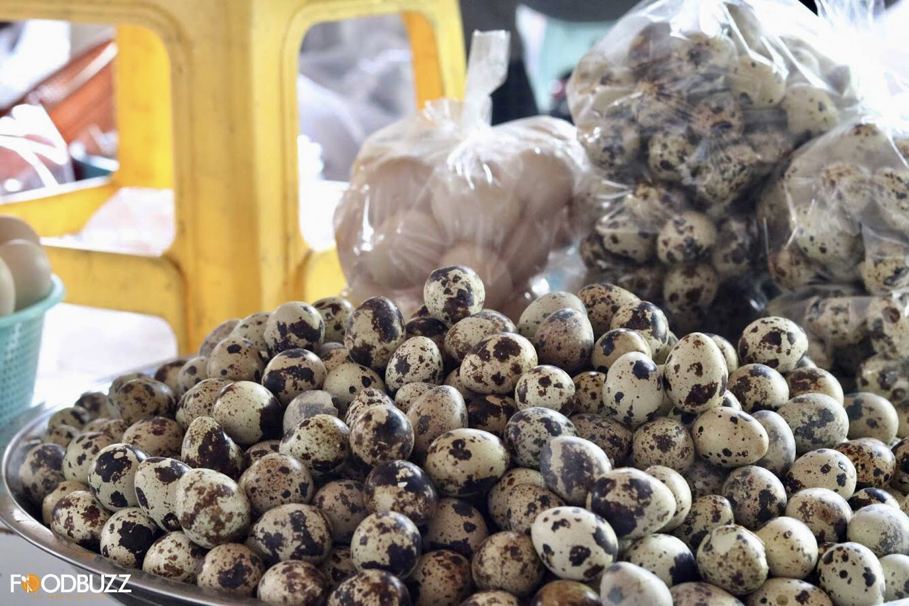៦ ខ្យង
ត្រូវហើយខ្យងចំហុយជាមួយស្លឹកគ្រៃត្រូវបានគេទទួលស្គាល់ថាជាអាហារតាមផ្លូវល្អបំផុតមួយនៅក្នុងប្រទេសកម្ពុជា។ ក្លិនឈ្ងុយឆ្ងាញ់។
៧ ជ្រក់
ពងក្រួចគឺជាអាហារធម្មតានៅគ្រប់ទីកន្លែងសូម្បីតែនៅក្នុងប្រទេសកម្ពុជា។ ជ្រលក់ពងទាស្ងោរឬពងក្រួចដាក់ក្នុងអំបិលម្រេចខ្មៅដើម្បីទទួលបានរសជាតិឆ្ងាញ់បំផុតពីពង។
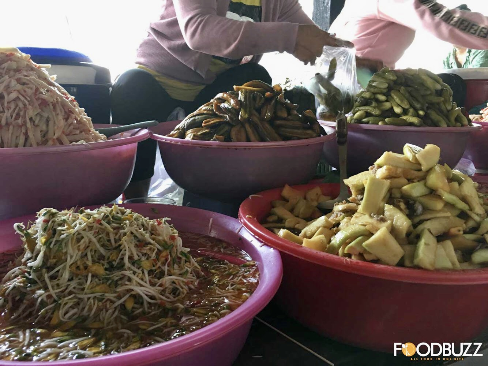៨ ប្រហិត
ចង់បានអ្វីដែលរហ័សនិងមានតម្លៃសមរម្យព្រោះអ្នកទើបតែមកដល់ឆាប់ៗនេះសាច់ប្រហិតអាចជាជំរើសរហ័សរបស់អ្នក។
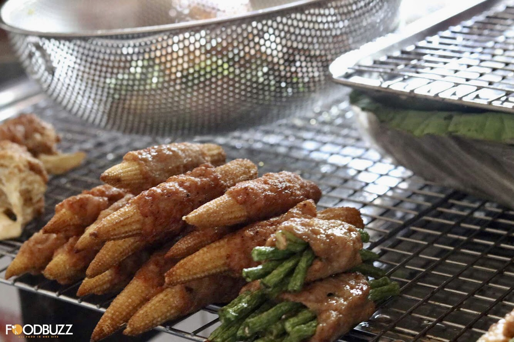៩ បង្កង អាំង និងគ្រឿងសមុទ្រ
ថ្វីត្បិតតែជាបក្សីតូចក្តីហ្គីលគឺជាអាហារដែលល្បីនៅក្នុងប្រទេសកម្ពុជា។ដូចគ្នានេះផងដែរអាហារសមុទ្រត្រូវបានគេមើលឃើញនៅទីនេះទោះបីជាឆ្ងាយពីសមុទ្រក៏ដោយ។
១០ សត្វល្អិត ចៀន
ចង់បានអ្វីដែលរហ័សនិងមានតម្លៃសមរម្យព្រោះអ្នកទើបតែមកដល់ឆាប់ៗនេះសាច់ប្រហិតអាចជាជំរើសរហ័សរបស់អ្នក។
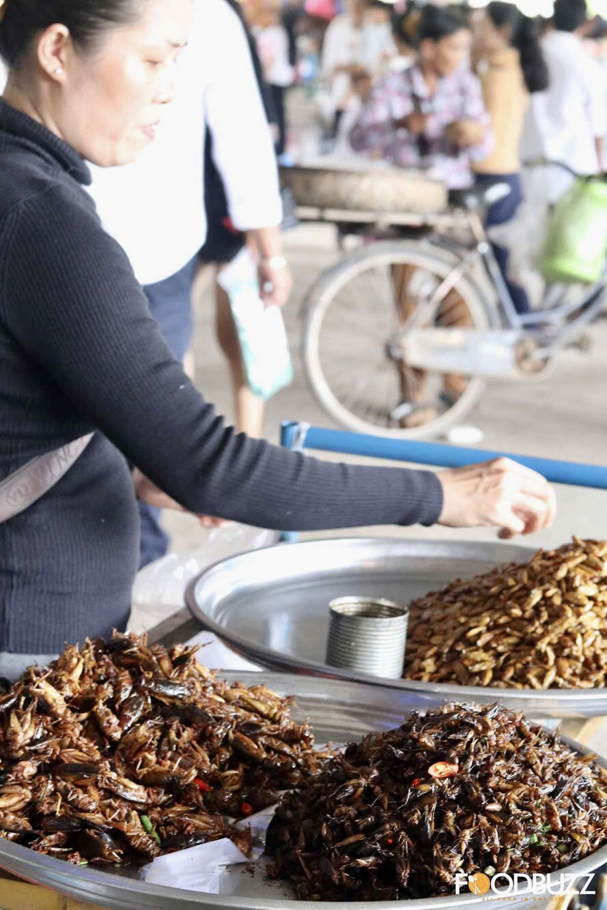១១ ផ្លែឈើ
ចង់សាកល្បងផ្លែឈើក្នុងស្រុកទេ? ដោយមិនចាំបាច់ទៅឆ្ងាយទិញវានៅទីនេះប្រសិនបើអ្នកបានមកទីនេះសម្រាប់ថ្ងៃសម្រាក។
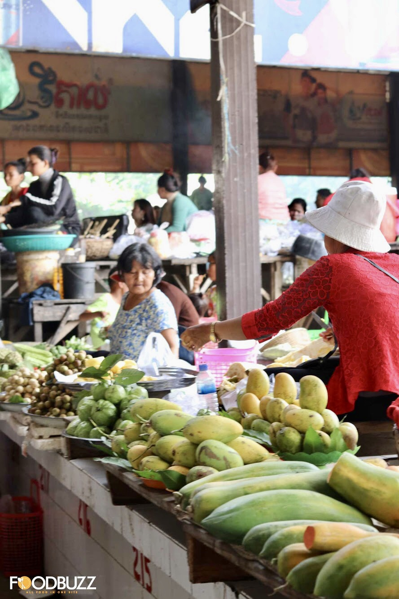១២ ផ្សេងៗ
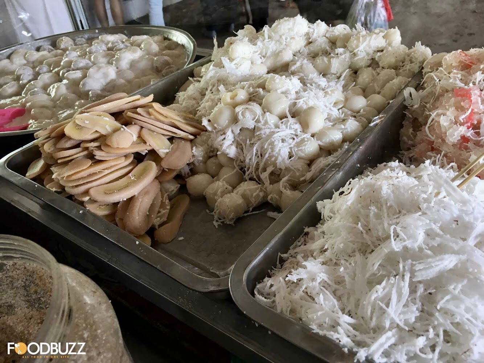 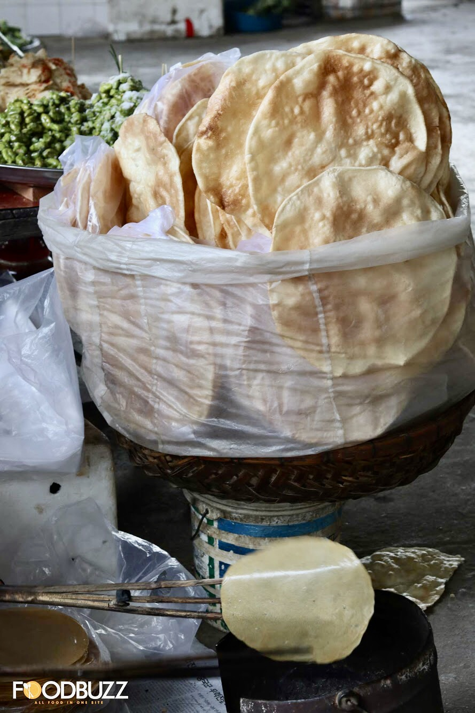 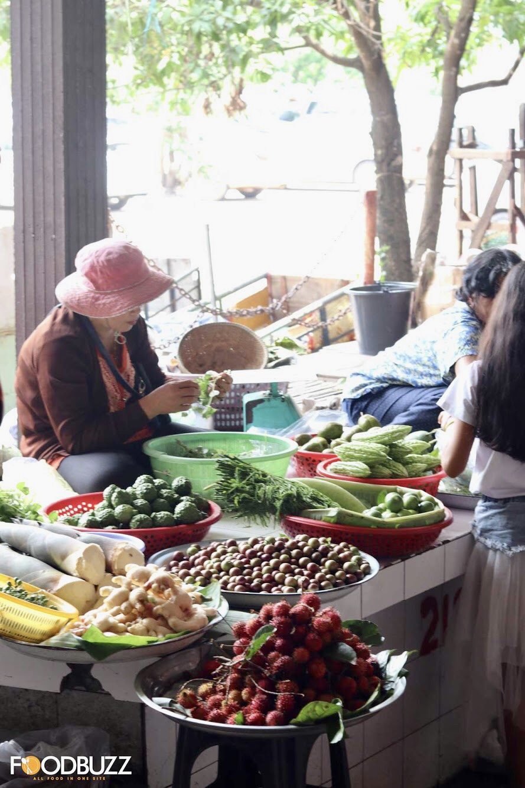 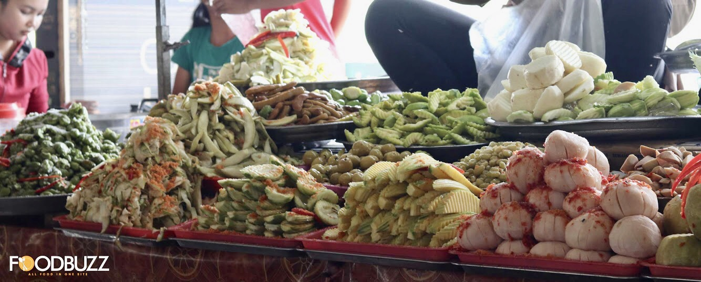នៅពេលដែលអ្នកបានតាំងទីលំនៅទាំងអស់អ្នកអាចបញ្ជាទិញម្ហូប (ប្រសិនបើអ្នកចង់បាន) ឬគ្រាន់តែរីករាយនឹងភេសជ្ជៈត្រជាក់ដោយទឹក។
យើងបានកុម្ម៉ង់សាច់មាន់អាំងទាំងមូលជាមួយបាយនិងបន្លែចៀនខ្លះដែលមានតម្លៃប្រហែល ១០ ដុល្លារ។ ស្រាបៀរមានតម្លៃ ៣.០០០ រៀលទឹកកកមានទឹកកក ១.០០០ រៀល។
រូបភាពបង្ហាញពីច្រកចូលកញ្ចុះ
រូបភាពបង្ហាញនៅវេលាពេលល្ងាច ព្រមទាំងព្រះអាទិត្យរាបនិងលិច
រមណីយដ្ឋានកៀនស្វាយនៅក្បែរវត្តគៀនស្វាយក្រៅរស្ថិតក្នុងឃុំធំស្រុកកៀនស្វាយមានចម្ងាយប្រហែល ១៩គីឡូម៉ែត្រពីរាជធានីភ្នំពេញឬប្រហែល៣០គីឡូម៉ែត្រពីតាខ្មៅ។ដើម្បីទៅដល់វត្តកៀនស្វាយឆ្លងកាត់ស្ពានព្រះមុនីវង្សហើយធ្វើដំណើរទៅទិសខាងកើតមានចម្ងាយ១៩គីឡូម៉ែត្រតាមផ្លូវជាតិលេខ១.ខ្លោងទ្វារទៅវត្តស្ថិតនៅខាងឆ្វេង។កន្លែងនោះមានចម្ងាយប្រហែល ៣០០ ម៉ែត្រនៅខាងក្នុងខ្លោងទ្វារ។